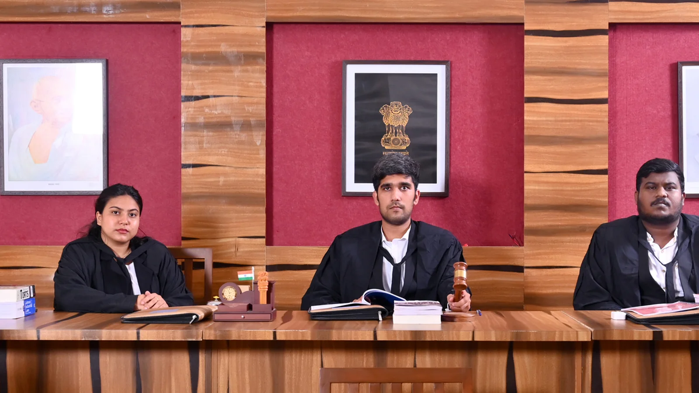

MIT-WPU School of Law

Overview
The School of Law at MIT-WPU was founded in 2018, marking a new chapter in the institution’s history.
The School of Law focuses on a value-driven approach to legal education, incorporating interactive sessions, hands-on practical training, moot court competitions, classroom presentations, and industry-centric assignments.